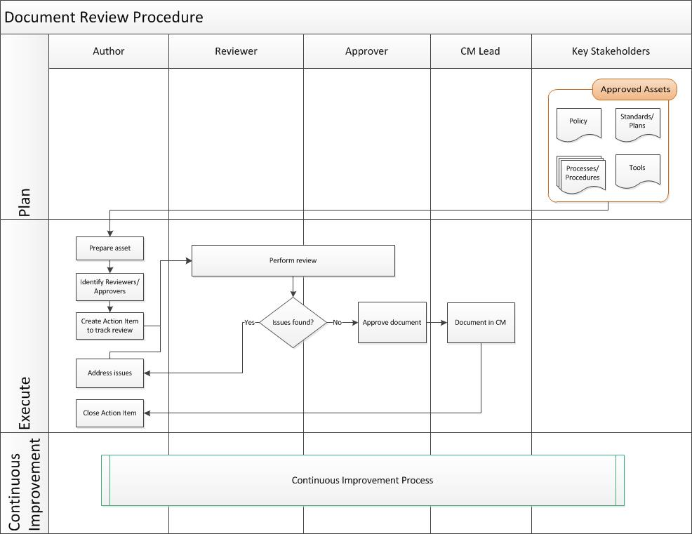

Document Review Procedure¶
All documentation is expected to comply with the following rules:
Is reviewed for accuracy.
Is accessible to the appropriate members of the company.
Has titles indicating the scope of the contents and an index arrangement
Has version numbers
Is maintained (e.g., revised, amended, reviewed, approved) and under the control of the configuration management process
Refer to appendix below for conventions to be used.
Entry Criteria/Inputs: |
|
Exit Criteria/Outputs: |
|
Activities¶

Step # |
Activity Name |
Description |
|---|---|---|
1 |
Author prepares document for review |
The author prepares the document for review in the peer review system. The author creates an action item in the tracking system and in the peer review system to initiate and record the review. |
2 |
Reviewers/Approvers are identified |
The potential reviewers (e.g., Key Stakeholders) are identified for document review. This is done once for each document type, for example, there may be several design documents, but they all have the same reviewers/approvers. |
3 |
Action item is created |
The author creates an action item in the tracking system to track the review progress, including document location and version, required reviewers and approvers, and review comments, if applicable. |
4 |
Review is performed |
The reviewers review the document, using the peer review system. The Review Checklist Guide may be used as an input for the document review. If there are issues in the review, the issues are recorded in the peer review system. When there are no outstanding issues, the review is complete. |
5 |
Issues are addressed |
The author addresses the issues and fixes any review findings. The author resolves review comments in the peer review system and the reviewers verify issues have been fixed. |
6 |
Document is approved |
When all issues have been addressed, the approvers note in the item (in the tracking system) that they approve. The author checks the final document and review checklist into CM. |
7 |
Document is baselined in CM |
The CM Lead baselines the document in the CM system as approved. |
8 |
Action item is closed |
The author closes the action item in the tracking system. |
Appendix¶
File Naming Convention¶
Document file names will follow the naming convention:
<program name/project title>-<acronym of the topic>.<file type>
Where the acronym of the topic is for example SQAP (Software Quality Assurance Plan).
Note: Document File Names should contain no spaces. Use the underscore symbol (_) or dash (-) in between words to represent a space, or use CamelCase and omit spaces from your file names altogether.
Document Title Convention¶
The document title appearing on the title page of the document will follow this form:
<program name/project title> <full name of plan>
An example of the full name of the plan would be “Wind River Linux Software Quality Assurance Plan”.
Revision History Information¶
Documentation has revision history information including:
Author, who made the changes
Version
Version Date (format: MM/DD/YYYY) of the change
Status
Description of the change
Reference to the action item or change request tracking the document review
Version Number¶
The reference denotes the name of the document under which the document is stored. The version of the document has the following structure:
x.yz
The version is modified as follows:
x is increased by one and yz is set to zero in case the document status changes to “Initial Version” or “Approved”
yz is increased by one in case of any other change of the document
Status¶
The states are defined as follows:
Draft: Document has been created, but is a work in progress.
Initial Version: Document is under CM after the initial review has been completed and defects fixed.
Updated: The document is currently under review and in the process of being updated.
Approved: The document has been reviewed. Defects related to the document are closed. The document is approved by the people mentioned on the approval page.
If a document requires changes after it has been approved, the status is set to Updated until the changes are reviewed and approved once again.
Types¶
The document types are defined as follows:
specification - specifies a required function, performance or activity (for example requirements specification);
description - specifies a planned or actual function, design, performance or activity (for example high level design description);
instruction - specifies in detail the instructions as to when and how to perform certain jobs (for example operator instruction);
plan - specifies the plan as to when, how and by whom specific activities shall be performed (for example software development plan);
diagram - specifies the function by means of a diagram (symbols and lines representing signals between the symbols);
list - provides information in a list form (for example code list, checklist);
log - provides information on events in a chronological log form;
report - describes the results of activities such as reviews, audits, tests, etc. (for example test report);
request - provides a description of requested actions that have to be approved and further specified (for example change request).
Change Log¶
Date |
Change Request ID |
Version |
Change By |
Description |
05/01/2020 |
N/A |
0.1 |
Naomi Lee |
Initial Draft |